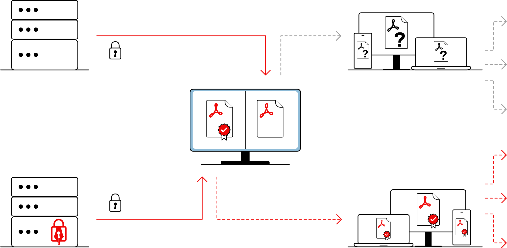
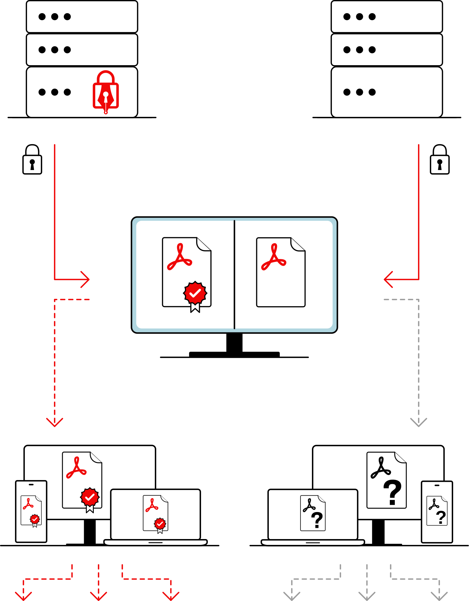

Easily sign PDF files from your command line or just let your nginx sign all PDFs that are served to your visitors. No special certificates needed, you can just reuse your already existing certificates, e.g. from Let's Encrypt.
Cryptographically sign your PDF files in PAdES-B and PAdES-T. This lets your site visitors know that PDFs were actually served by your server.
Customize the signature to your liking. You can append a visible or invisible signature. Visible signatures can be further customized.
DocsThe CLI can be easily invoked. Just run
java -jar open-pdf-sign.jar -i input.pdf -o output.pdf \
-c /etc/letsencrypt/live/openpdfsign.org/fullchain.pem \
-k /etc/letsencrypt/live/openpdfsign.org/privkey.pemWhile you can use open-pdf-sign to sign single PDFs, you can also use the open-pdf-sign-configurator to just sign every single PDF that your nginx server serves.
But why?
Users that access PDFs of your website directly can be sure of the authenticity of the served PDFs because of the TLS connection. This however ends at the end of the TLS connection. If the PDF is shared after download, the recipient cannot be sure of the authenticity of the PDF.
With the open-pdf-sign server installed, every PDF served is automatically and invisibly signed with the certificate already used for the TLS connection. This allows recipients of the PDF to verify that the PDF actually came from your server, even after it was shared outside the TLS connection. This is illustrated by the diagram below.
 